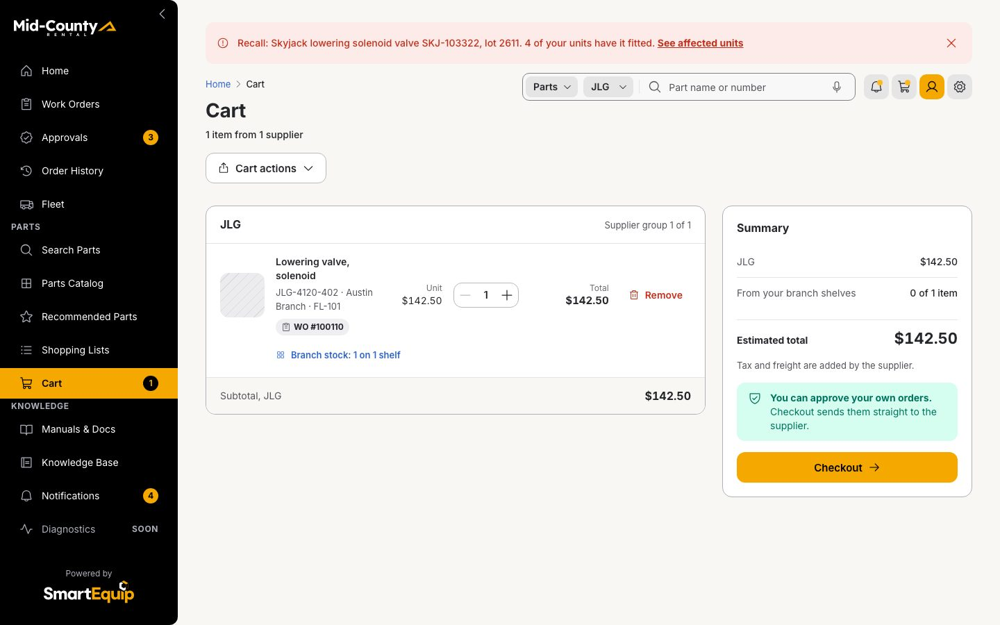
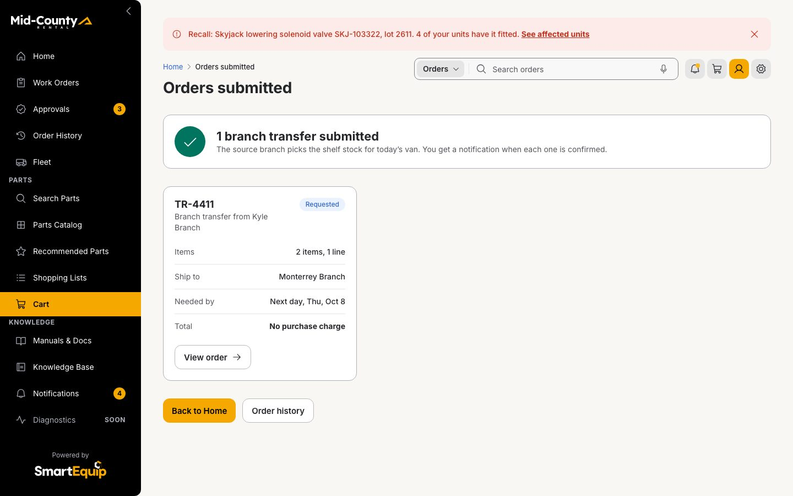

4 walkthroughs, 4 business outcomes
Each proves 1 outcome on the real screens of this web build; each page has 6 figures drawn from the run.

V1 · Fault to fixUrgency · KB article to part · Deep linkLower mean time to repair: 11 steps

V2 · Proactive fleet maintenanceCompliance · Kit to cart · Template, adjusted per unitLess unplanned downtime: 8 steps

V3 · Emergency recall responseRisk · Lot to fleet · Bulk actionHigher safety compliance: 10 steps

V4 · Global branch operationsEfficiency · Branch to branch · Routing logicLower procurement spend: 14 steps
Business objects across the walkthroughs
The same collection of objects carries all 4 outcomes; what each walkthrough does with them.
| Business object | V1 | V2 | V3 | V4 |
|---|---|---|---|---|
| Work order | reads | |||
| Fleet unit | reads | reads | ||
| Knowledge Base article | reads | |||
| Search context | writes | |||
| Part | reads | reads | ||
| Cart line | writes | writes | ||
| Shopping list (template) | reads | |||
| Service history, | reads | |||
| Kit for the unit | derives | |||
| cart lines | writes | |||
| Reason on the added line | derives | |||
| Recall notice | reads | |||
| fleet units, SJIII3219 | reads | |||
| Existing work orders | reads | |||
| Remediation list | derives | |||
| work orders created | writes | |||
| Recall action | writes | |||
| Branch | reads | |||
| sources costed | derives | |||
| Branch stock | reads | |||
| TR-4411 | writes | |||
| Shelf ledger | writes |
Drawn from the walkthrough as it played in this folder on 2026-10-27: the frames are the screens it showed, the values are what the rules returned and what the session recorded. Regenerate with node _src/value-diagrams.mjs.